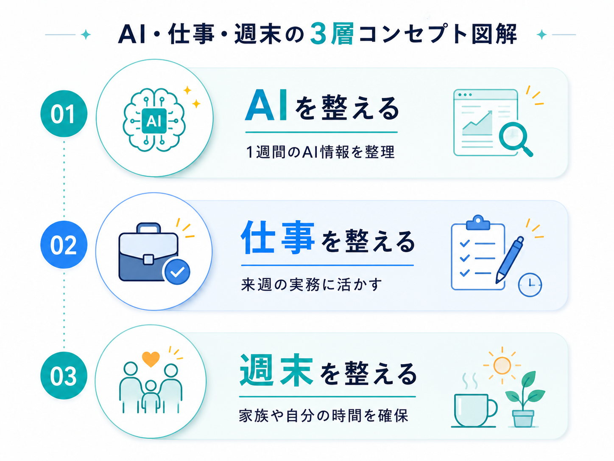
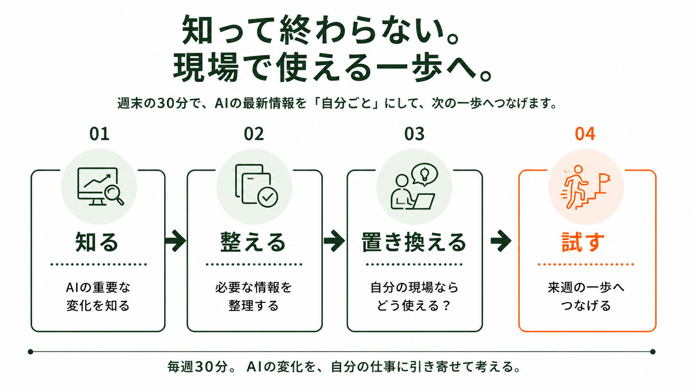
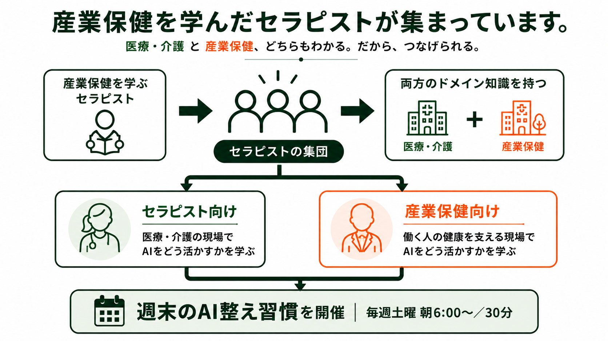

週末の朝に。
整える習慣を。
1週間のAIの変化を整理し、自分の仕事や現場でどう活かせるかを考える30分。
AIを追い続ける場ではなく、来週の一歩に置き換えるための朝活です。
CONCEPT
AI情報だけでなく、
週末の時間も整える。
週末のAI整え習慣は、ToToNoE+の思想から生まれた実践プロジェクトです。AIやDXを目的にするのではなく、「本当に大切にしたいことは何か」から考えます。
本質ではない情報収集や迷いを減らし、仕事・時間・学び・専門性を整える。そして、生まれた余白を患者・利用者への価値提供、臨床・研究、家族との時間、自分自身の回復へ戻していきます。
AIに振り回されるのではなく、自分のペースで学び、試し、整える。

WHY 6 AM
なぜ、土曜朝6時なのか。
土曜朝6時は、ただ早く勉強するための時間ではありません。金曜夜に流されすぎず、週末を前向きに始めるため。朝のうちに学びを終えて、日中を家族や自分のために使うため。
平日に忙しくても、週末の最初に自分の学びを取り戻す。だからこそ、学びを土曜の朝に置きました。
AI情報を整える。週末のスタートを整える。そして、その先の時間を取り戻す。
HOW
知って終わらない。
現場で使える一歩へ。

最新情報を受け取るだけではなく、自分の仕事に引き寄せ、次の一歩まで考えることを大切にしています。
WHO / TWO FIELDS
医療・介護と産業保健。
両方を知っているから、つなげられる。
ToToNoE+は、医療・介護の専門性を持ちながら、産業保健を学んできたセラピストが集まるチームです。両方のドメインを知っているからこそ、AIの変化をそれぞれの現場に合わせて考えることができます。

VOICES
続けている人が、
実際に受け取っているもの。
毎回の朝活後にアンケートをとり、内容と進め方を毎週見直しています。ここに出ているのは、その回答をそのまま匿名で掲載したものです。
第2回〜第14回の参加後アンケート（回答124件）より。運営メンバーの回答を含みます。
医療・介護職向けの申込ページへ移動します。
まずは、週末の朝30分から。
毎週土曜 朝6:00〜｜30分。自分に合った入口から、次回の朝活にご参加ください。